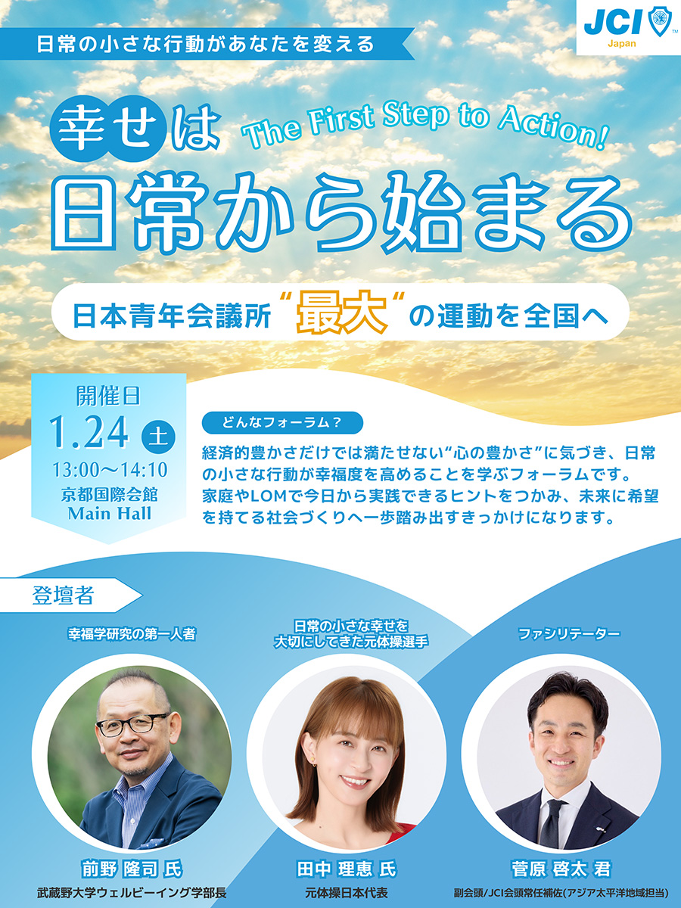

The First Step to Action!～幸せは日常から始まる～ #概要 JC活動に全力で向き合いながら、どうすれば家族や仲間、地域の幸せにつなげられるのかを模索しているメンバー向けに、「幸せとは何か、どのように幸せを育んでいけるのか」を科学的知見と実体験の両面から考えるフォーラムです。  #ポイント 国家グループ 社会開発会議 議長として下坂監事が出向しています。活躍をみんなで応援しに行きましょう！ #フォーラム詳細 詳細はこちらをご確認ください。 #その他の開催情報 各種セミナーやフォーラムの詳細は、こちらをご確認ください。